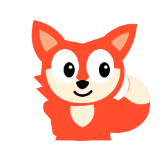
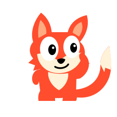
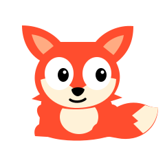

01CURIOUS + ENERGETIC

Tail curl
Broad ears, a compact body, and a curled tail. Clear fox silhouette with room for big facial reactions.
Small-size + silhouette test
Three original, editable SVG directions. Built around silhouette and expression.

Broad ears, a compact body, and a curled tail. Clear fox silhouette with room for big facial reactions.

Asymmetric ears, an upright stance, and a high tail. A more characterful pose that can lean, wave, and react.

A low, rounded fox with a folded tail. A quieter study companion with a wide face and a soft, grounded stance.